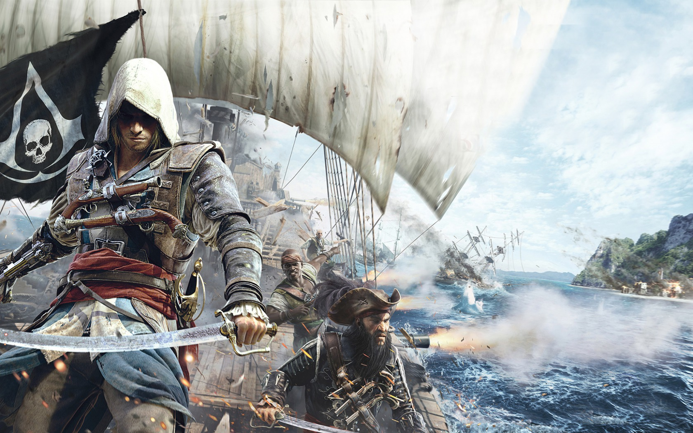

1715년, 해적들은 카리브해를 지배하고 자신들만의 무법 공화국을 세웠습니다. 이러한 무법자들 가운데 야심 찬 젊은 선장 에드워드 켄웨이가 있 습니다. 그의 업적은 검은수염과 같은 전설들로부터 인정을 받았지만, 이로 인해 오래된 전쟁에 휘말리고 해적들이 세운 모든 것이 파괴당할 위기에 처합니다.
야심 찬 암살자
암살단에서 훈련받은 카리스마 넘치고 잔인한 해적 선장 에드워드 켄웨이가 되어 보십시오. 에드워드는 암살단의 암살검과 4개의 화승 권총 및 커틀래스 쌍검 등 신규 무기를 손쉽게 바꾸면서 싸울 수 있습니다.